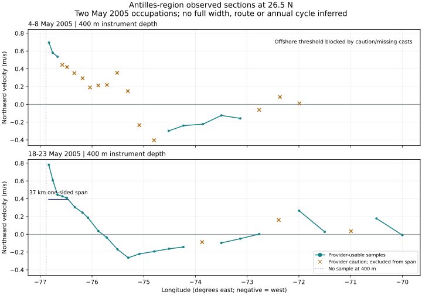

Observed sections · measurement candidate
Antilles Current near Abaco
Two May 2005 occupations show northward velocity at 400 m instrument depth. These are local samples across the current region. Along-current length, full width and annual changes remain unresolved.
Compare the occupations

Teal points are provider-usable samples; orange crosses are NOAA caution profiles and are excluded from the span calculation. Gray dotted lines mark casts without a sample at 400 m. Each occupation combines several days; tides were not removed. Error velocity is retained in the data table and is not treated as a confidence interval.
Inspect one section
Loading pinned section data…
Equirectangular OSW geography with a coarse coastline. Points locate casts; they are not current edges or a route. Hover or focus a station for its cast name. Values and dates are also listed below.
| Cast | UTC average time | Longitude | Latitude | Northward m/s | Error velocity m/s | Provider assessment |
|---|
Measurement rule and remaining gaps
For each occupation, start at the largest positive northward sample among provider-usable casts at 400 m. Moving offshore, find the first bracket at half that sampled peak. Never bridge a caution cast or a missing depth sample. Interpolate within the two bracketing stations and calculate WGS84 distance from the sampled peak to that crossing.
The repeat gives about 37 km for this one-sided span. Its crossing-station distances from the peak are about 35–50 km; those describe sampling support, not uncertainty or annual variation. The nearshore boundary is not diagnosed. Two occupations in May cannot establish a seasonal cycle. The threshold, tides, error velocities and representativeness of the sampled peak require scientific review.
Diagnostic rules · Section data and calculation · All acquired profiles and quality comments · NOAA data access · Regional scientific context